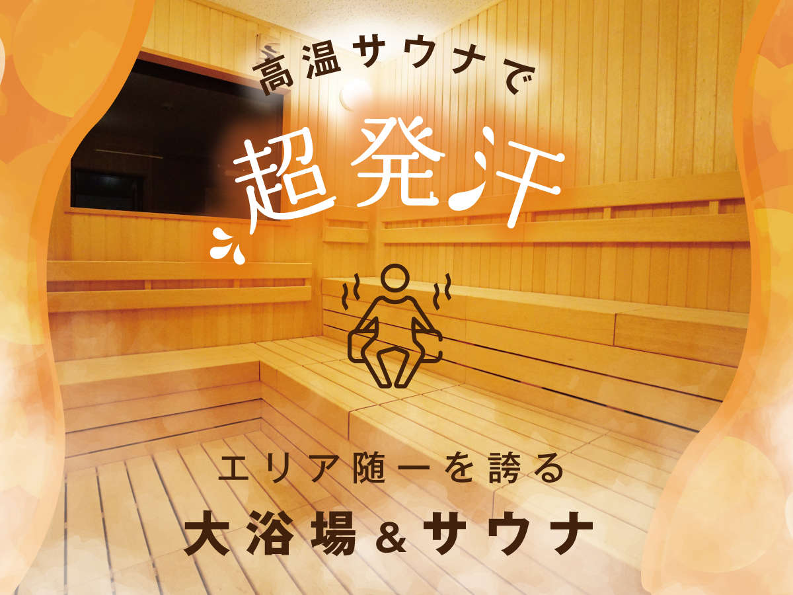
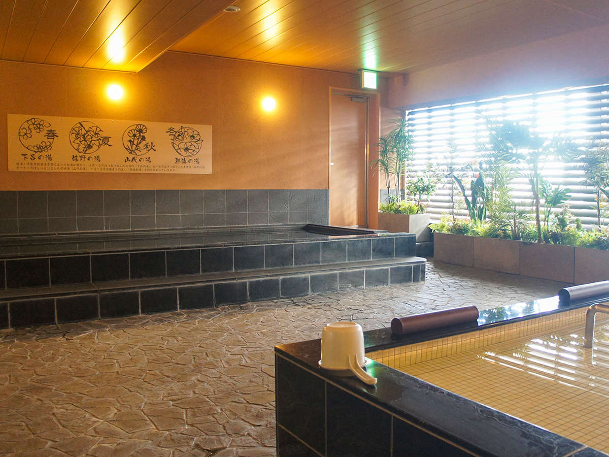
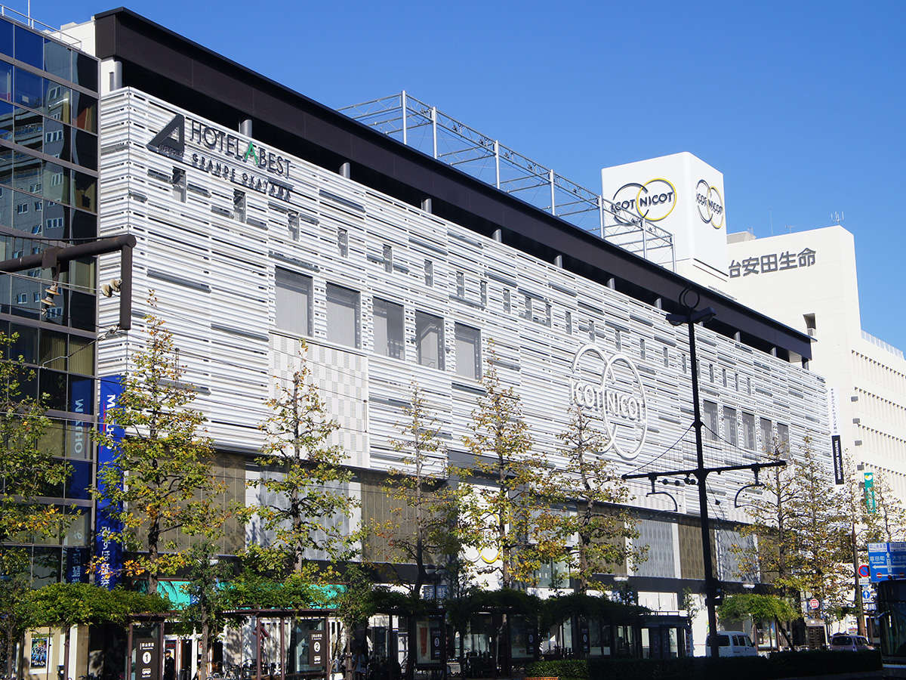

岡山駅徒歩3分★大浴場・サウナ・ジム無料★小学生以下添い寝無料
エリア： 岡山県 > 岡山・玉野



ホテルアベストグランデ岡山
6360円～
JR岡山駅徒歩3分、地下通路直結。クチコミで大好評の大浴場・サウナ・ジムも無料。ワーキングスペースあり。岡山食材盛りだくさんの朝食ビュッフェは絶品。駅前商店街側よりICOTNICOT6Fへお上がりください。
JR岡山駅 後楽園口(東口)より徒歩3分 ICOTNICOT駅前商店街側西EVにて6F◆提携駐車場は大通り挟んで反対側